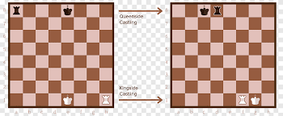
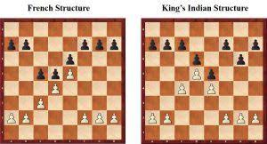
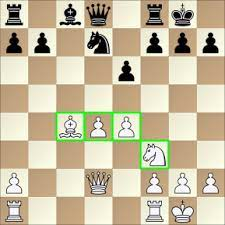

King's Safety
King's Safety is an important concept in chess that refers to the safety of the king. The ultimate goal in chess is to checkmate the opponent's king, so it is crucial to keep your own king safe from attack.
Castling
One way to improve King's Safety is through castling. Castling is a move that allows the king to move two squares towards a rook on the player's first rank, while the rook moves to the square over which the king crossed. This move helps to move the king to a safer position, away from the center of the board, and also brings the rook closer to the center of the board, where it can be more effective.
Pawn Structure
The pawn structure also plays a crucial role in King's Safety. A solid pawn structure can help to defend the king and create safe spaces for the king to move. A weakened pawn structure can leave the king exposed to attack.
Control of the Center
Controlling the center of the board is also important for King's Safety. If you control the center, you have more space to maneuver your pieces and you can better defend your king. If your opponent controls the center, they have more space to launch attacks against your king.
Avoiding Weaknesses
Avoiding weaknesses is another important aspect of King's Safety. Weaknesses such as holes in your pawn structure or pieces that are not defended can leave your king vulnerable to attack. It's important to be aware of any weaknesses in your position and to try to address them before they become a problem.